Case study · Curriculum systems
Scalable Algebra 1 Curriculum Architecture
One course spine carried 144 lessons across ten units — every lesson a student reconstruction page set beside an annotated teacher edition, produced through a pipeline that refuses to ship a page whose parts don't resolve.
- Audience
- Algebra 1 learners — including intervention settings — and the facilitators who deliver the course, many of whom did not build it.
- My role
- Curriculum architect and sole instructional designer: course architecture, evidence design, page systems, production pipeline spec.
- Constraints
- One designer, 144 lessons: quality had to come from architecture, not heroics. Print- and LMS-friendly; rigor non-negotiable.
- Impact
- A shared source supports consistent student and teacher editions across 144 lessons. The Canvas course package ran district-wide. Learning impact attributable to these materials has not been measured.
The problem
Course materials drift at scale. Individual lessons get rebuilt from scratch, practice disconnects from the objective it was supposed to prove, and answer keys quietly stop matching the pages in front of learners. The design problem was a scalable architecture: shared lesson phases, predictable evidence patterns, and page systems that let one designer ship 144 coherent lessons — without lowering mathematical rigor to get there.
Two spines govern everything. The course runs Conceptual → Visual → Procedural → Transfer; each lesson runs Activate → Model → Guide → Apply → Reflect → Extend. Objectives and their evidence are fixed before instruction is authored — Dick & Carey's order — and a production engine enforces that same order mechanically.
The core artifact: Guided Notes, shipped twice per lesson
U5-L03, Subtract Polynomials — a four-page student reconstruction with a four-page annotated teacher edition, exactly as shipped. The teacher edition is not a separate document: it uses the same renderer in teacher-key mode, reducing manual transcription and version mismatch. Both editions still require mathematical and visual review. Select any page to inspect it.
{kind=link}
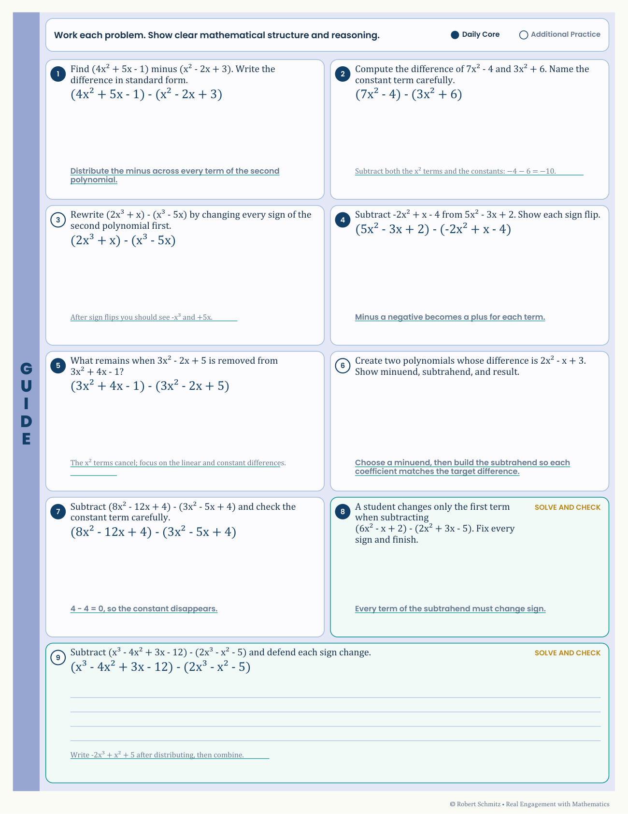

{kind=link}
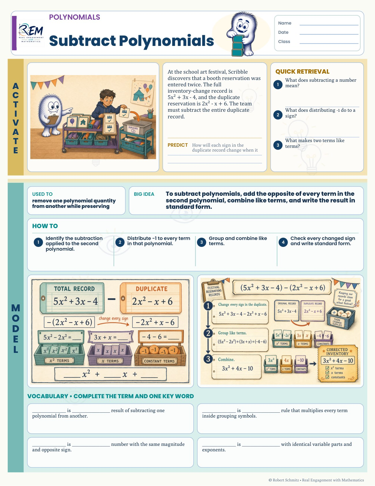
{kind=link}
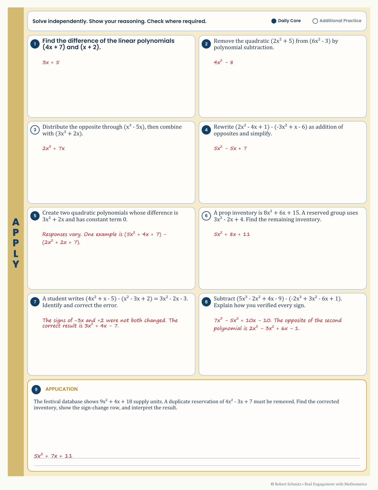
Practice systems: each engine encodes one feedback loop
Around the Guided Notes core sit reusable practice engines. Each one designs a different feedback loop into the paper itself — so the check happens during practice, not a day later at grading. Two engines in evidence, student page beside its teacher support.
Color By Number — a visual cue for checking work
{kind=link}
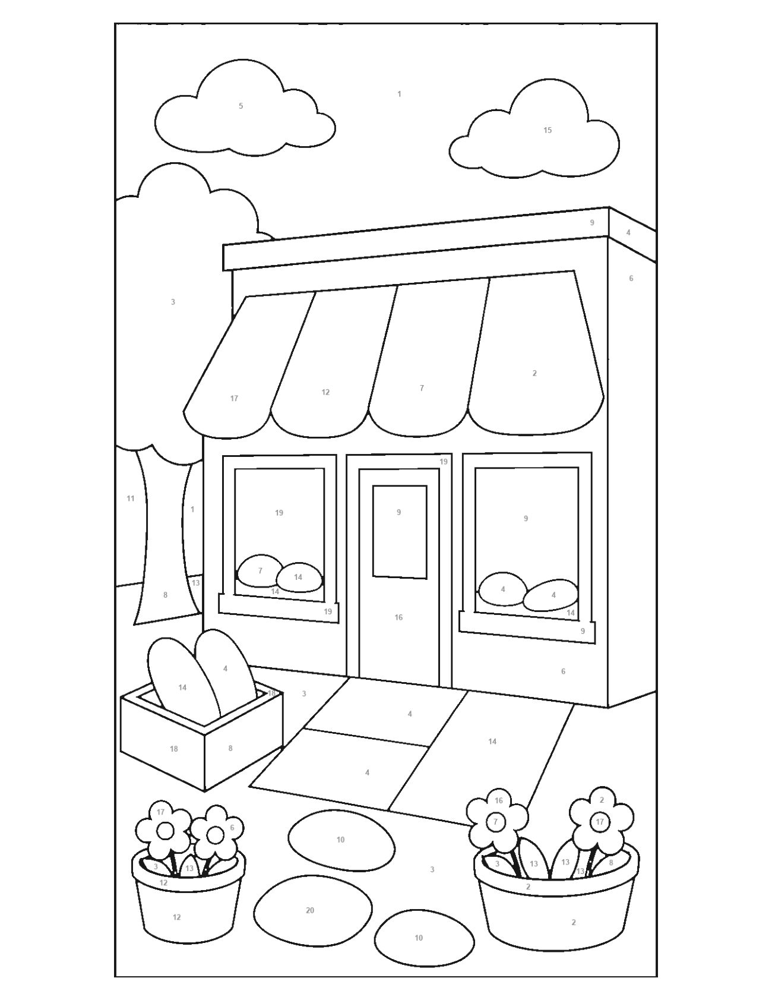
{kind=link}
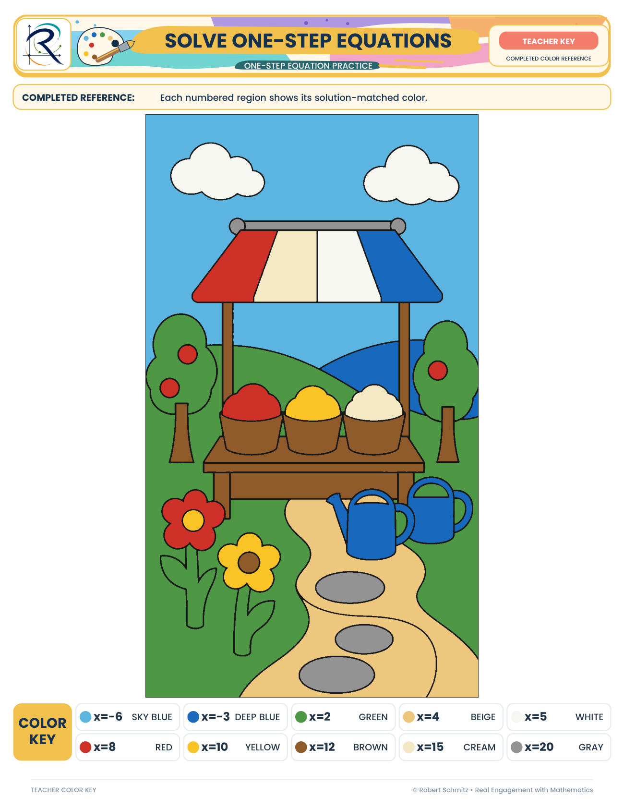
Rally Coach — collaboration with a designed job for both learners
{kind=link}
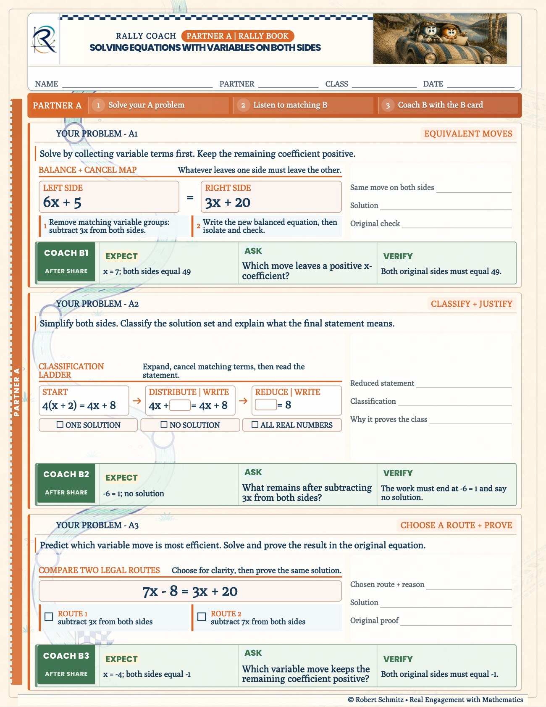
{kind=link}
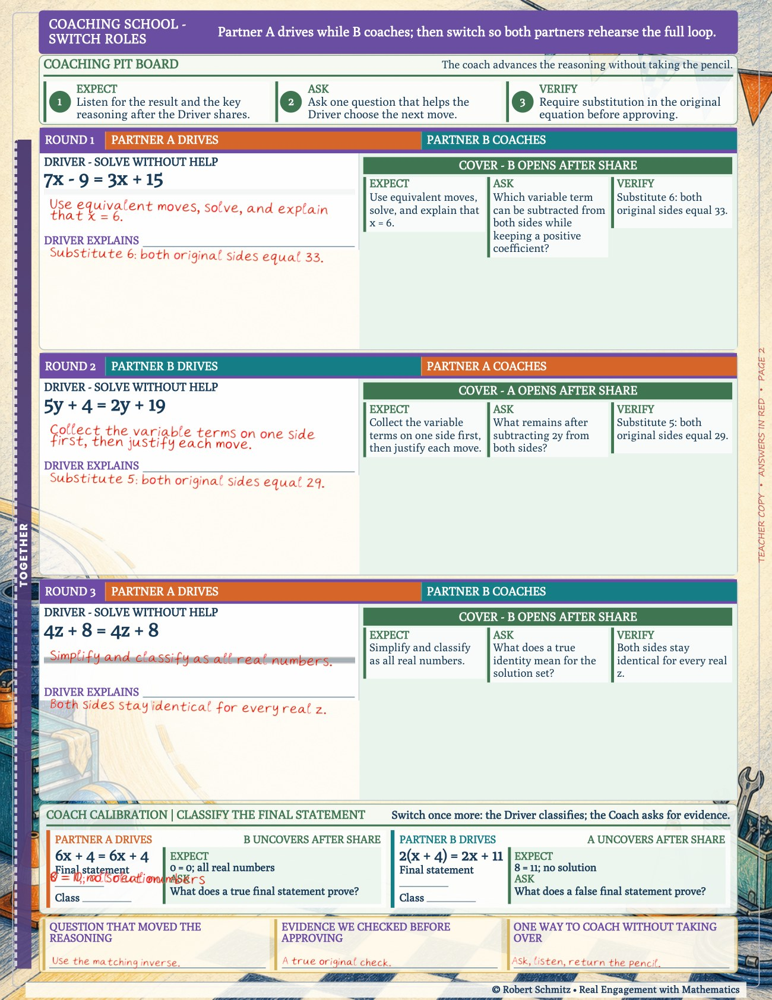
{kind=link}
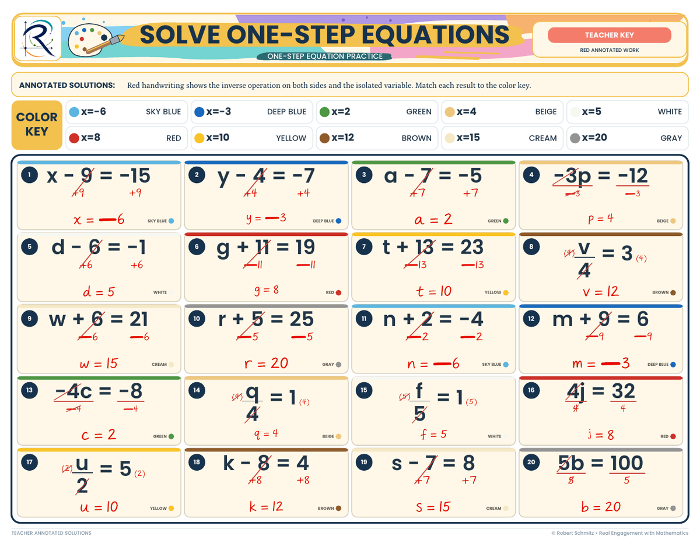
{kind=link}
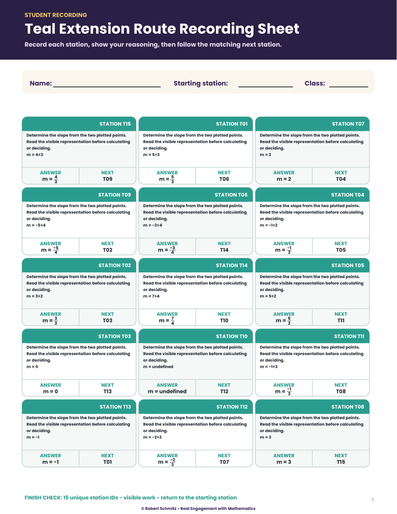
{kind=link}
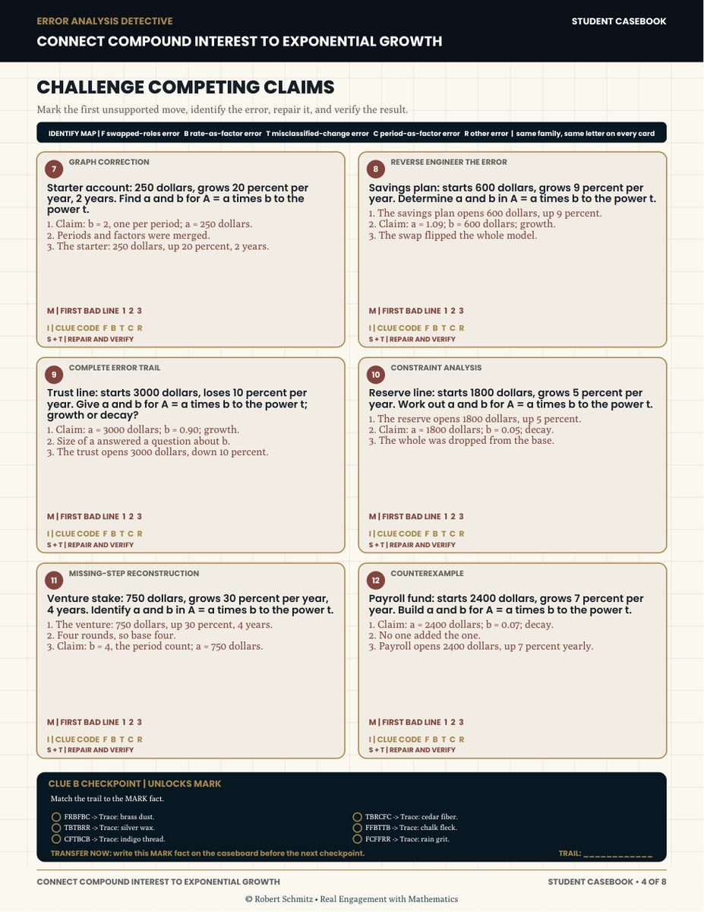
Process: design order first, then a pipeline that enforces it
The design order is Dick & Carey's: analyze the standard and the learner, fix the measurable objective, design the assessment that proves it — then author instruction. Concretely, a lesson's reconstruction blanks, readiness checks, and annotated teacher edition are specified before its hook and worked examples exist. The analysis layer is written down, not tribal knowledge: a Florida B.E.S.T. benchmark-cluster crosswalk, a per-unit misconception registry (move-and-change-sign, "equals means the answer comes next," checking the transformed equation), and a visual-model fade plan per unit.
- Lesson requestCourse, unit, lesson → one canonical ID
- MetadataStandards, objective, template family
- Scenes & graphsConcept models resolved first
- AssetsEvery required asset must resolve — or the run blocks
- RenderersGuided Notes + practice pages
- Teacher-key modeSame source — paired editions
- Publication gateFail-closed checks before release
{kind=link}
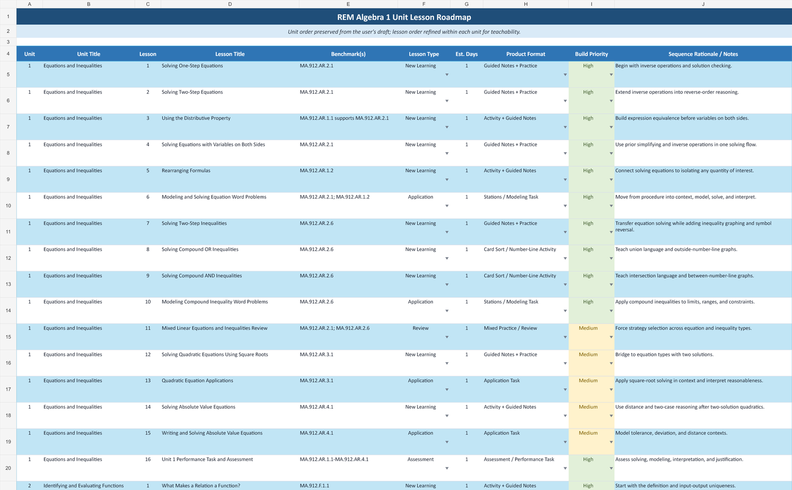
ADDIE, mapped to the actual system
- Analyze Benchmark-cluster crosswalk, per-unit misconception registry, and a "why this unit exists" rationale — grounded in 11+ years of watching where learners break.
- Design The two spines, template-family map, visual-model fade plans, and evidence patterns — objectives and checks fixed before instruction.
- Develop Renderers for Guided Notes, practice engines, and teacher-key mode over a versioned SVG/PNG model library (algebra tiles, balance scale, number line, coordinate plane, function machine).
- Implement Print and LMS delivery; Canvas/QTI packaging; a district course package run by instructors who did not build it.
- Evaluate The fail-closed gate before release; state, district, and formative results after — feeding revision of the materials, not just the gradebook.
Design decisions that did the heavy lifting
- Reconstruction over transcription Learners predict, name the move, solve, check, and define — they rebuild the mathematics rather than copy notes. The teacher edition is the completed reconstruction, so the evidence design is visible on every page.
- Teacher keys as a renderer mode Keys are generated from the same source as student pages. This reduces version mismatch and repeated manual entry. Source errors and rendering defects remain possible, so the final student and teacher pages are reviewed together.
- Practice formats as systems, not one-offs Each engine encodes one feedback loop — visual comparison, route checking, printed peer coaching, misconception analysis — and travels across any standard on the spine.
- Fail-closed production A missing model or unresolved asset is a blocking failure with a structured error report. Quality control runs before publication, every time, without relying on anyone's vigilance.
Impact — and what remains to evaluate
The architecture held: 144 lessons across ten units, each shipping as a student reconstruction with an annotated teacher edition, produced through the same pipeline and gate. New topics inherit lesson phases, evidence patterns, and asset templates. The district-wide Canvas package — with its 10,000+ standards-aligned assessment items — was delivered by instructors who did not build it, which was the real test of whether structure, not the designer's presence, carried the quality.
Evidence and next evaluation. Evidence on this page is the shipped design itself — page systems, keys, and pipeline behavior. What remains to evaluate: learner-outcome effects isolated to these materials (no such metrics are claimed here), facilitation fidelity when engines run in classrooms I never visit, and item-level analytics from LMS delivery to drive the next revision cycle. Marketplace sales and download counts exist but are not learning evidence, so they are not cited as impact.
The designer's question underneath the whole system: what must stay constant so quality scales? The answer was the evidence design and the spine — plus a pipeline that refuses to ship a lesson whose parts don't resolve.